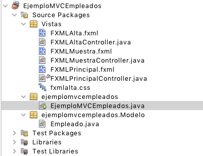
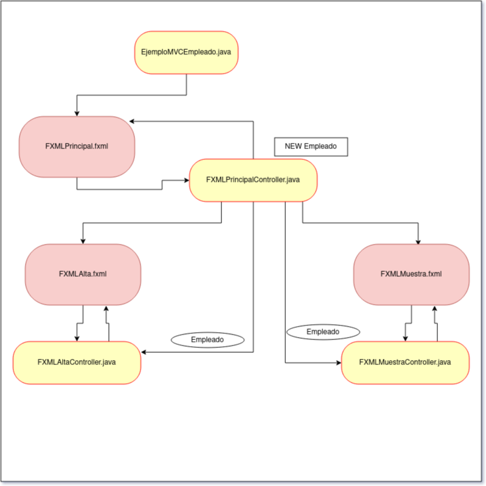
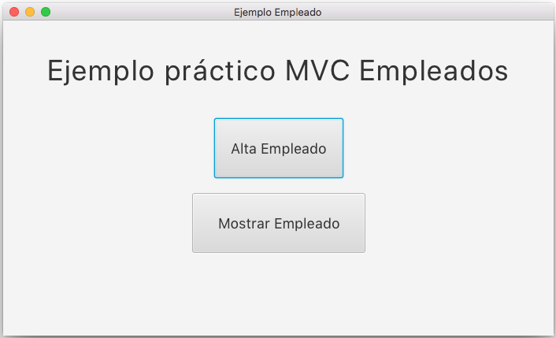

Antes de continuar viendo los controles de tipo menú, vamos a realizar un ejemplo completo, en que veremos:
- Algunos ejemplos de los controles visto hasta ahora.
- Como utilizar varias vistas o ventanas.
- Como pasar objetos a diferentes vistas o ventanas.
Vamos a crear una clase Empleado, con atributos de todo tipo.
Tendremos una primera clase, nuestro punto de partida:
public class EjemploMVCEmpleados extends ApplicationCrearemos una Vista principal donde solo tendremos dos botones, otra vista para introducir los datos del empleado en un objeto tipo Empleado (primer botón) y una segunda vista para mostrar los datos del objeto creado en la otra vista (segundo botón).
Si instanciamos el objeto Empleado en cada una de las vistas los datos se perderán, serán objetos distintos, y cuando la ventana se cierre el objeto desaparecerá. Para mantener el objeto existente, lo instanciaremos en el controlador de la vista principal, lo añadiremos en la vista para darlo de alta, y lo recibiremos con datos. Lo añadiremos cuando queramos mostrarlo y se visualizarán los datos introducidos en la otra vista.
La aplicación tendrá la siguiente estructura:

- EjemploMVCEmpleados.java programa principal.
- Empleado.java clase definición de un empleado
- FXMLPrincipal.fxml vista principal
- FXMLPrincipalController.java controlador de la vista principal
- FXMLAlta.fxml vista para dar de alta al empleado
- FXMLAltaController.java controlador de la vista alta empleado
- FXMLMuestra.fxml vista para mostrar datos del empleado
- FXMLMuestraController.java controlador de la vista muestra empleado
El esquema de llamadas sería el siguiente:

Comenzaremos por nuestra clase Empleado y nuestro programa principal:
Clase Empleado:
public class Empleado {
//Atributos miembro
private String nombre;
private String dni;
private String direccion;
private String telefono;
private int edad;
private String dpto;
private boolean estado; //Fijo o eventual
private float sueldo_bruto;
public Empleado(String nombre, String dni, String direccion,
String telefono, String dpto, boolean estado,
float sueldo_bruto, int edad) {
this.nombre = nombre;
this.dni = dni;
this.direccion = direccion;
this.telefono = telefono;
this.dpto = dpto;
this.estado = estado;
this.sueldo_bruto = sueldo_bruto;
this.edad = edad;
}
public Empleado() {
nombre = "";
dni="";
}
public void setNombre(String n) {
nombre = n;
}
public String getNombre() {
return nombre;
}
public void setDni(String dni) {
this.dni = dni;
}
public String getDni() {
return dni;
}
public float getSueldo_bruto() {
return sueldo_bruto;
}
public void setSueldo_bruto(float sueldo_bruto) {
this.sueldo_bruto = sueldo_bruto;
}
public int getEdad() {
return edad;
}
public void setEdad(int edad) {
this.edad = edad;
}
public String getTelefono() {
return telefono;
}
public void setTelefono(String telefono) {
this.telefono = telefono;
}
public String getDireccion() {
return direccion;
}
public void setDireccion(String direccion) {
this.direccion = direccion;
}
public String getDpto() {
return dpto;
}
public void setDpto(String dpto) {
this.dpto = dpto;
}
public boolean isEstado() {
return estado;
}
public void setEstado(boolean estado) {
this.estado = estado;
}
//método
public void muestraInfo() {
System.out.println("NOMBRE: " + nombre);
System.out.println("DNI: " + dni);
System.out.println("SUELDO BRUTO: " + sueldo_bruto);
}
@Override
public String toString() {
return "Empleado{" + "nombre=" + nombre + ", dni=" + dni + ", direccion=" + direccion + ", telefono=" + telefono + ",
edad=" + edad + ", dpto=" + dpto + ", estado=" + estado + ", sueldo_bruto=" + sueldo_bruto + '}';
}
public float calculaSalarioNeto() {
float neto, anual_bruto;
anual_bruto = sueldo_bruto * 12;
if (anual_bruto < 12000) {
neto = anual_bruto - (anual_bruto * 0.2f);
}
if (anual_bruto >= 12000 && anual_bruto < 25000) {
neto = anual_bruto - (anual_bruto * 0.3f);
} else {
neto = anual_bruto - (anual_bruto * 0.4f);
}
return neto;
}
}Clase Principal:
public class EjemploMVCEmpleados extends Application{
@Override
public void start(Stage primaryStage) throws IOException {
Parent root = FXMLLoader.load(getClass().getResource("/Vistas/FXMLprincipal.fxml"));
Scene scene = new Scene(root);
primaryStage.setTitle("Ejemplo Empleado");
primaryStage.setScene(scene);
primaryStage.show();
}
public static void main(String[] args) {
launch(args);
}
}
Referenciamos la vista, le añadimos la escena (Scene) y ésta al escenario (Stage). Cambiamos el título de la ventana y la hacemos visible.

Su vista FXMLPrincipal.fxml
<?xml version="1.0" encoding="UTF-8"?>
<?import javafx.scene.control.Button?>
<?import javafx.scene.control.Label?>
<?import javafx.scene.layout.AnchorPane?>
<?import javafx.scene.text.Font?>
<AnchorPane id="AnchorPane" prefHeight="400.0" prefWidth="600.0"
xmlns="http://javafx.com/javafx/18" xmlns:fx="http://javafx.com/fxml/1"
fx:controller="Vistas.FXMLPrincipalController">
<children>
<Label alignment="CENTER" layoutY="40.0" prefHeight="45.0" prefWidth="699.0"
text="Ejemplo práctico MVC Empleados" textAlignment="CENTER">
<font>
<Font size="37.0" />
</font>
</Label>
<Button fx:id="btnAlta" layoutX="268.0" layoutY="124.0" mnemonicParsing="false"
onAction="#handleButtonAction" prefHeight="76.0" prefWidth="164.0" text="Alta Empleado">
<font>
<Font size="18.0" />
</font>
</Button>
<Button fx:id="btnMostrar" layoutX="240.0" layoutY="219.0" mnemonicParsing="false"
onAction="#handleButtonAction" prefHeight="76.0" prefWidth="220.0" text="Mostrar Empleado">
<font>
<Font size="18.0" />
</font>
</Button>
</children>
</AnchorPane>Los id de los botones, únicos controles de esta vista son: btnAlta y btnMostrar. Los dos tienen asignado el método handButtonAction como método a ejecutar cuando se pulse el botón correspondiente.
El controlador relacionado con esta vista es: FXMLPrincipalController.java
public class FXMLPrincipalController implements Initializable {
Empleado empleado = new Empleado();
@FXML
private Button btnAlta;
@FXML
private Button btnMostrar;
@FXML
private void handleButtonAction(ActionEvent event) {
Button boton = (Button) event.getSource();
if (boton.getText().equals("Alta Empleado")) {
try {
FXMLLoader fxml = new FXMLLoader(getClass().getResource("FXMLAlta.fxml"));
AnchorPane rootC = fxml.<AnchorPane>load();
Scene scene = new Scene(rootC);
Stage altaStage = new Stage();
altaStage.setTitle("Alta Empleados");
altaStage.setScene(scene);
altaStage.initModality(Modality.APPLICATION_MODAL);
altaStage.show();
FXMLAltaController cc = fxml.getController();
cc.setDatos(empleado);
} catch (IOException ex) {
System.out.println("Error al crear la vista");
}
} else {
try {
FXMLLoader fxml = new FXMLLoader(getClass().getResource("FXMLMuestra.fxml"));
AnchorPane rootC = fxml.<AnchorPane>load();
Scene scene = new Scene(rootC);
Stage altaStage = new Stage();
altaStage.setTitle("Muestra Empleados");
altaStage.setScene(scene);
altaStage.initModality(Modality.APPLICATION_MODAL);
altaStage.show();
FXMLMuestraController cc = fxml.getController();
cc.setDatos(empleado);
} catch (IOException ex) {
System.out.println("Error al crear la vista");
}
}
}
@Override
public void initialize(URL url, ResourceBundle rb) {
// TODO
}
}El método se ejecuta cuando ocurre el evento de que el usuario ha pulsado un botón, recoge el texto de botón y así diferenciamos las dos acciones, alta o mostrar.
Este será el único sitio en el que instanciaremos el objeto Empleado, porque si lo hiciéramos de nuevo perderíamos los valores de sus propiedades.
Empleado empleado = new Empleado();Muy importante son las siguientes lineas, que a través de la referencia a la vista recogemos su controlador y ejecutamos un método que inyecta el objeto de tipo empleado. El tipo de controlador es FXMLAltaController, el controlador de la vista Alta.
FXMLAltaController cc = fxml.getController();
cc.setDatos(empleado);Esto tanto en el botón de Alta como en el de Muestra.